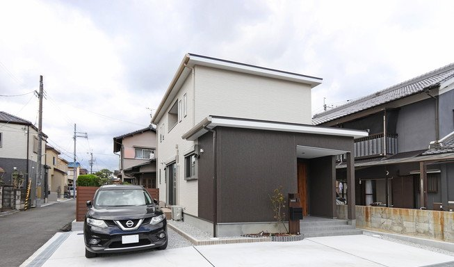
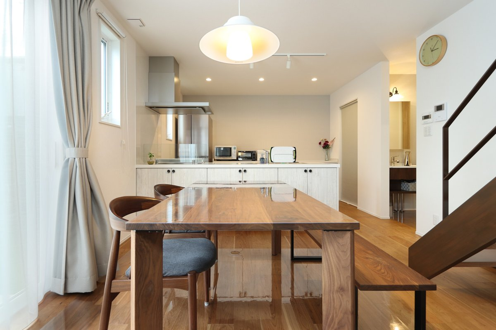

旧サイトに掲載していた取材記事より。
もともと賃貸に住んでおり、マイホームへの憧れは、お互い強く持っていました。
お家でバーベキューやホームパーティーをするのを憧れていて、決断しましたね。
子供がまだ居ていないゆえ、ゆっくりと考えながら進めれました。
家にチラシが入っており、それをきっかけに当時シバサンホームが建てていたお家の見学に行きました。
初めて見学したお家がコラボハウスだったので、住む実感はなかなか湧きませんでしたが、シバサンホームさんのセンスを見た感じがして、いい勉強になりました。
その後何社か回っていましたが、平行しながら事務所に行きましたね。
印象としては、大工さんが凄く信用できると思った事と、住む人に優しい家を建てているなぁ、と。
目には見えない中身の部分を大事にしているんだなぁと、当時のアドバイザーから伝わってきました。
土地探しで時間がかかりましたが、予算と通勤の関係を絞りながら選びました。
主人が沢山選んできて、私がその中から決めていましたね(笑)
本当に自分たちのペースで他社も検討しながら進めていました。
私達は要望はあったものの、住みやすいお家が一番いいなと思っていたので、オシャレなどは二の次で考えていました。
金額や性能も打合せ時に相談していましたが、間取りや細かい部分は、中々想像だけでは実感がわかず、お家のイメージをインスタなどで調べながら納得できる様に勉強もしていました。
その後の打合せでも、その場で言ったことを都度間取りを編集して出してくださったので、凄くわかりやすく打合せをできました。

シンプルでやりたい事をしました。
耐震性などのお家の性能はいちばん重視したかもしれません。
その他は、広いリビングに、お庭と和室は絶対に欲しかったですね。
進めていくと色んな設備やモノがありましたが、自分たちのイメージに合わせて決めましたね。
私はキッチンにこだわりがあったので、私が主で進めました。
キッチン横には、広めのパントリーがあり、買い物から帰ってきてからも、スムーズに収納できたりするので、大変便利です。
キッチンは絶対に広く見えるフラット型を選びました。
その他は、今後の事を考え、子供の個人部屋や和室などもつくって頂き、仕切りとして広く見えるハイドアで自由自在に空間を変えられるので、主人がとても気に入っています。
照明に関しては、とにかくお家が明るい方がよかったので、ダウンライトは少ししか使用しなかったです。
その他家具は提案していただきました。
リビング階段にしているんですが、提案頂いた当初はお互い違和感しかなかったんです、でも今は家事も生活も楽で満足しています。
自分たちが住む家になるから、重視する部分やこだわり部分が沢山ありましたが、一番は金額オーバーになっても全部自分達の好きなものだし、妥協はせずに間取りも内装も決めようとなりましたね。
何度も打合せをしていくにつれ、想いが本当に強くなっていました。
夫婦で任せきりにはせず、譲り合い、受け止め合いながらお家づくりを進めたので、喧嘩もなく、トントンと進めれました。
子供がまだいない故の余裕があったからスムーズに、納得いく家づくりができたかもしれませんね。
子供ができてからお家づくりを検討される方が多いかもしれないですが、もし家を建てられる考えがあれば余裕のある時に行動する事もいいと思います。
私たちはシンプルで住みやすい家を希望としていたので、悩む事が少なかったですが、どんな要望があれ是非皆さんも好きな家づくりをしてほしいと思いました。
おかげ様で今は沢山の友人を呼び、わが家の自慢をしています(笑)